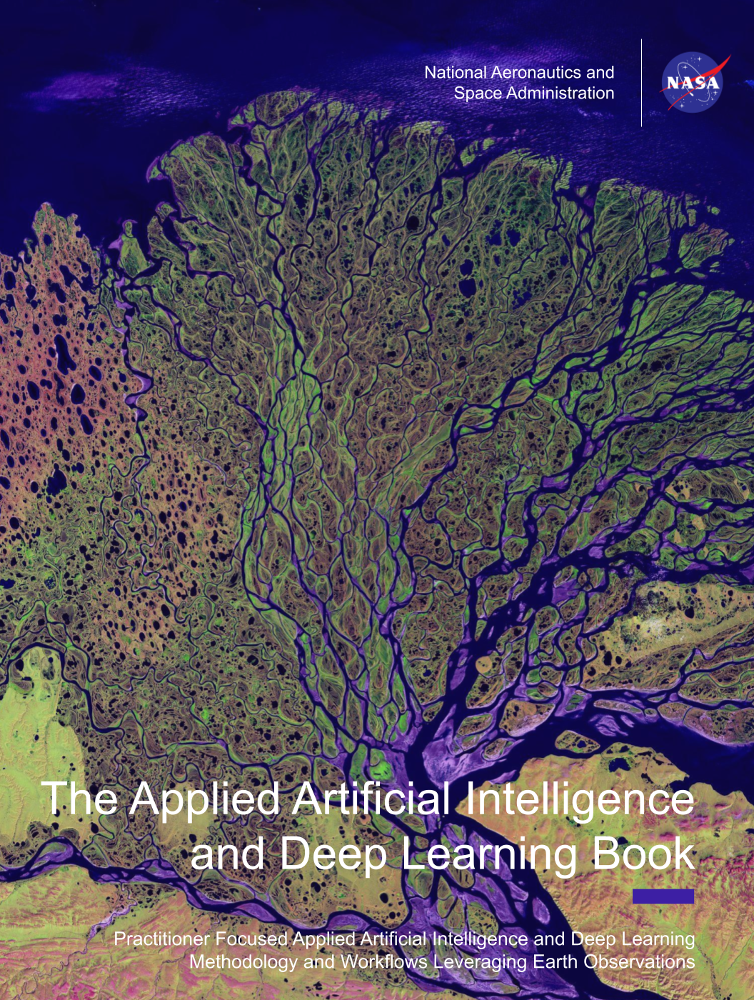

Applied Artificial Intelligence and Deep Learning Book
Introduction

Editors
Tim Mayer  · NASA - EarthRISE · University of Alabama in Huntsville
· NASA - EarthRISE · University of Alabama in Huntsville
Biplov Bhandari · Earth Resources Technology
David Saah · University of San Francisco · Spatial Informatics Group
First edition. Published electronically June 1st 2026 DOI: 10.5281/zenodo.20547797
DISCLAIMER:
The views expressed in this publication are not necessarily those of the agencies cooperating in this project. Mention of a commercial company or product in this report does not imply endorsement by NASA. The use of information from this publication concerning proprietary products for advertising or publicity is not permitted. Trademark names and symbols are used in an editorial fashion with no intention of infringement on trademark or copyright laws.
Figures and maps in this handbook contain material from: Google Maps data: Imagery © 2018 Landsat/Copernicus, DigitalGlobe, Mapdata © 2018 Google. Sentinel-1 data: Earth Big Data, LLC 2018, contains modified Copernicus Sentinel data 2014–2018, processed by ESA. ALOS data: Earth Big Data, LLC 2018; includes Material © JAXA/METI 2007–2018
EarthRISE Program Office
National Space Science and Technology Center
320 Sparkman Drive, Huntsville, AL 35805
![The Lena River, some 2,800 miles (4,400 km) long, is one of the largest rivers in the world. The Lena Delta Reserve is the most extensive protected wilderness area in Russia. It is an important refuge and breeding ground for many species of Siberian wildlife. This image was acquired by Landsat 7’s Enhanced Thematic Mapper plus (ETM+) sensor on July 27, 2000. This is a false-color composite image made using shortwave infrared, infrared, and red wavelengths. Image provided by the USGS EROS Data Center Satellite Systems Branch. This image is part of the Landsat Earth as Art series.](Images/Lena_river.png)
Editors’ Introduction
Background and Motivation
The intersection of deep learning, foundational models, and geospatial science is reshaping how we observe, interpret, and manage our planet. Remote sensing analysts, Earth scientists, environmental specialists, and GIS professionals increasingly encounter machine learning tools in their workflows—yet for many, the path into this rapidly evolving landscape remains a challenge. Comprehensive textbooks struggle to keep pace with the field’s velocity, while research literature often presupposes a depth of AI expertise that most applied Earth scientists have not yet developed. This book was created to bridge that gap.
The EarthRISE Applied Artificial Intelligence and Deep Learning Book is the product of more than seven years of community-driven knowledge sharing within the Geospatial-Artificial Intelligence Working Group (Geo-AI WG). Rooted in three defining pillars: Building Capacity, Application Development, and Knowledge Sharing this volume represents the third pillar in action. A practitioner’s guide distilled from real-world experience, peer collaboration, and a deep commitment to making advanced geospatial AI accessible to the broader Earth observation community. This book stands in a lineage of open, community-authored knowledge resources –alongside the SAR Handbook and the Google Earth Engine Book—sharing the same mission: to translate technical expertise into resources practitioners can immediately apply.
What This Book Is—and What It Is Not
This is not an encyclopedic survey of artificial intelligence. The field evolves too quickly for any single volume to claim comprehensiveness, and we make no such claim. Instead, this book presents a curated collection of applied deep learning (DL) use cases ranging from common analytical needs to broader considerations for practitioners, such as the ethics of artificial intelligence.
Think of this book as a “choose your own adventure.” Readers with foundational knowledge can move directly to applied chapters aligned with their thematic interests—whether agriculture, forestry, water resources, urban environments, or disaster response. Each chapter pairs conceptual background with executable Jupyter notebooks designed to run across multiple platforms and frameworks, including TensorFlow, PyTorch, Google Cloud Platform, and Amazon Web Services. Our goal is to meet practitioners where they are and lower the barrier to experimentation.
This first collection of chapters is designed with the future in mind. As the field continues to evolve, the book remains open to future submissions and collaborations as a living resource that grows alongside the community it serves.
Audience
We assume readers arrive with meaningful geospatial expertise and familiarity with satellite imagery, raster and vector data, and common Earth observation workflows, but limited formal background in DL or AI. Our aim is to grow awareness, build practical skill, and empower readers to evaluate where and when DL approaches can meaningfully enhance their existing methods.
How to Use This Book
Readers may progress sequentially from foundational data preparation through increasingly advanced problem sets, or navigate directly to chapters most relevant to their domain. Applied examples are cross-cutting by design: a workflow developed for crop-type mapping may illuminate approaches applicable to flood mapping, urban land cover classification, or ecosystem monitoring. We encourage readers to run, modify, and share the accompanying code. All notebooks are provided under open licenses.
Meetings, Workshops, and Community Events
The chapters and methods presented in this book did not emerge in isolation. They are the product of years of structured exchanges, hands-on workshops, international collaborations, and community-driven hackathons that brought together practitioners, scientists, and thought leaders from across the scientific community. The events below trace the arc of that community from early capacity-building exchanges to the strategic planning now shaping the next generation of Geo-AI applications.
Data Science and AI/ML Exchange (2019)
Google Campus, Mountain View, CA, USA · Geo for Good 2019
The 2019 Data Science Exchange marked the beginning of a sustained, network-wide effort to build applied machine learning (ML) capacity within the Geo-AI Working Group community. Held in tandem with the Google Geo for Good Summit, the exchange brought together scientists and practitioners to explore the use of data science, ML, and DL for Earth science applications. Participants worked hands-on with real-world problem sets, bringing label data from their own service areas to begin developing ML workflows using Google Earth Engine.
This event laid the organizational foundation for what would become the Geo-AI Working Group, establishing a shared vocabulary, collaborative norms, and a forward-looking agenda for applied AI within the network. We are grateful to Nick Clinton and Karin Tuxen-Bettman at Google for their support, as well as to partners from the University of San Francisco, the International Centre for Integrated Mountain Development (ICIMOD), the Asian Disaster Preparedness Centre (ADPC), Regional Centre for Mapping of Resources for Development (RCMRD), International Center for Tropical Agriculture (CIAT), and AGRHYMET.
TensorFlow Technical Exchange (2020)
Virtual · 21–25 September 2020
Building directly on the 2019 exchange, the 2020 TensorFlow Technical Exchange extended the network’s capacity-building efforts into a fully virtual format during the COVID pandemic. Over five days, participants from partner organizations engaged in training sessions, lectures, and hands-on demonstrations led by experts in AI, DL and ML for Earth sciences.
The exchange focused on applying TensorFlow within the Google Earth Engine framework, with each team working toward a defined ML workflow for an identified service application. Participants also explored emerging methodologies and libraries aligned with the Geo for Good 2020 summit. The event continued efforts initiated by the TensorFlow working group to provide network-wide expertise and support, and contributed to virtual programming at the Geo for Good 2021 summit.
TensorFlow Exchange at Geo for Good (2022)
Google Bay View Event Center, Mountain View, CA · October 4–6, 2022
The 2022 exchange returned to an in-person format at Google’s Bay View campus, deepening the technical work of previous years and formalizing the establishment of a Geo-AI Working Group. Participants focused on refining end-to-end ML workflows for solution/service co-development, with an emphasis on deploying trained models within Google Earth Engine and other open source platforms.
Data Science and AI/ML Exchange (2023)
Google Campus, Mountain View, CA · Geo for Good 2023
The 2023 exchange expanded scope to encompass the rapidly evolving landscape of foundational models, large language models, and integrated Geo-AI workflows. In addition to continued capacity building in DL methods, participants worked in a build-a-thon format to develop and refine ML workflows for specific service applications, culminating in presentations at a dedicated session during the Geo for Good 2023 summit.
Earth Observation Foundational Model Hackathon
Geo for Good Summit, Dublin · 2023
Earth Observation Foundational Model (EOFM) and Large Earth Model (LEM) Integration into Google Earth Engine
This hackathon challenged participants to explore how Earth observation foundational models could be effectively leveraged as part of operational geospatial workflows spanning Google Earth Engine and Google Cloud Platform. Working in collaborative teams, hackers hosted, deployed, and ran inference from models including NASA IMPACT and IBM’s Prithvi and Meta’s Segment Anything Model (SAM), sourced from Hugging Face. Two integration pathways were explored: batch prediction via data export from GEE with a custom I/O pipeline, and online prediction directly from Earth Engine using the EE–Vertex AI connector. The hackathon was a defining moment for the community’s understanding of how foundational models can complement traditional Earth observation workflows.
Technical Work Planning: Geo-AI for Earth Science (2025)
National Space Science and Technology Center, Huntsville, AL · 3–7 February 2025
The February 2025 work planning meeting represented a strategic inflection point for the Geo-AI Working Group and Data Science area of NASA EarthRISE. Convened at the National Space Science and Technology Center, the meeting brought together organizational leads to formalize a shared strategic vision for Geo-AI and conduct roadmapping toward alignment with the Earth Action strategic framework.
American Geophysical Union Sessions
Members of the Geo-AI Working Group have convened and chaired dedicated sessions at the American Geophysical Union annual meeting since 2022, building a scientific forum for presenting applied results and advancing community dialogue on ML for Earth science. The sessions have grown in scope each year, reflecting the rapid evolution of the field itself.
In 2022 in Chicago, the group organized and chaired a full suite of sessions under the title Addressing Environmental Challenges and Sustainable Development Through Earth Science Applications Utilizing Machine Learning IV, comprising two oral sessions, a poster session, and a virtual poster session. The call for that year centered on novel applications of ML, DL, and AI in data-sparse regions, with an emphasis on open data access, cloud computing, capacity building, and data democracy—themes that run throughout this book.
By 2023 in San Francisco, the session framing had broadened to foreground the rise of Geo-spatial AI and its intersection with geoscience, with a specific focus on innovative technical solutions addressing pressing environmental issues while advancing FAIR data principles: Findability, Accessibility, Interoperability, and Reuse. The group presented Applications of Machine Learning and Deep Learning to Address Environmental Challenges and Sustainable Development Goals, reflecting the community’s expanding scope beyond DL fundamentals toward integrated, deployment-ready workflows.
The 2024 session in Washington, D.C., Bridging the Gap: Leveraging Geo-Artificial Intelligence to Address Environmental Challenges, acknowledged the moment the field was entering: one shaped by foundational models, large language models, and a new generation of Earth observation AI tools. The session description captured the stakes clearly—groundbreaking efforts in foundational model development, near real-time deforestation alerts, precision agriculture, and air quality monitoring—and called for collaboration between experts, non-profits, and applied scientists to ensure these capabilities reach the regions and communities that need them most.
Taken together, these sessions document not just the group’s contributions to the scientific community, but the arc of the field itself: from establishing ML workflows to deploying foundational models at scale.
Acknowledgements
We are deeply grateful to NASA Headquarters and the NASA EarthRISE Program for their vision and sustained commitment to open, community-driven capacity building. In particular, we wish to thank Natasha Sadoff (NASA Headquarters), Dan Irwin (EarthRISE Program Manager), Eric Anderson (EarthRISE Deputy Program Manager), Brent Roberts (EarthRISE Chief Scientist), Ashutosh Limaye (NASA Headquarters), and Nancy Searby (NASA Headquarters Retired).
The following individuals provided invaluable peer review whose thoughtful feedback substantially strengthened every chapter: Chishan Zhang (University of Illinois Urbana-Champaign), Kyle Woodward (Delo Insurance Solutions / Spatial Informatics Group), Lilly Thomas (Development Seed), Ate Poortinga (Spatial Informatics Group), John Dilger (SynMax), Nick LaHaye (Spatial Informatics Group), Karlee Zammit (Natural Resources Canada), Alqamah Sayeed (University of Alabama in Huntsville / NASA EarthRISE), Aparna Phalke (University of Alabama in Huntsville / NASA EarthRISE), Deepali Bidwai (Alpha Square), Nishon Tandukar (NAXA), Sandip Rijal (Florida Atlantic University), Andréa Nicolau Puzzi (Spatial Informatics Group), Silvia Arámbula (Creative Labs STEAM Education), Phoebe Odour (University of Alabama in Huntsville / NASA EarthRISE), Diana West (University of Alabama in Huntsville / NASA EarthRISE), Emil Cherrington (University of Alabama in Huntsville / NASA EarthRISE), Betzy Hernandez (University of Alabama in Huntsville / NASA EarthRISE), Kevin Horn (NASA MSFC / NASA ODSI), Micky Maganini (University of Alabama in Huntsville / NASA EarthRISE), Jacob Abramowitz (University of Alabama in Huntsville / NASA EarthRISE), Kristina Glass (NASA EarthRISE Developers Academy / Analytical Mechanics Associates), Isabelle Le Conche (NASA EarthRISE Developers Academy / Analytical Mechanics Associates), Jacob Ramthun (University of Alabama in Huntsville / NASA EarthRISE), and Lena Pransky (University of Alabama in Huntsville / NASA EarthRISE).
Above all, we thank the readers and practitioners who engage with this material, build upon it, and carry this work forward.
Preface
Forthcoming.
Foreword
Forthcoming.
About the Editors
Tim Mayer is a Research Scientist at the University of Alabama in Huntsville and Lead Data Scientist of the NASA EarthRISE program. Tim has worked at the intersection of applied research and Geospatial Artificial Intelligence for over a decade with NASA. Tim co-leads the Geospatial Artificial Intelligence Working Group. His primary research interest surrounds the applied intersection of Ecology and advanced deep learning techniques.
Biplov Bhandari is a computational Earth scientist at Earth Resources Technology, where he turns satellite and geospatial data into decisions by building cloud-native pipelines, predictive models, and geospatial AI agents. His work spans climate and environmental risk — wildfire, flood, drought, and infrastructure resilience — and extends to disaster response and humanitarian programs with public-sector partners. He also serves as Secretary of the Sahana Software Foundation, a free and open-source disaster-management community.
David Saah is Managing Principal and Co-founder of Spatial Informatics Group, Professor and Director of the Geospatial Analysis Lab at the University of San Francisco. Broadly trained as an environmental scientist, David is recognized as a global leader in geospatial analysis, remote sensing, wildfire science, and natural hazard modeling. He has authored dozens of peer-reviewed journal articles, book chapters, and technical reports, and is dedicated to the broad dissemination of his research through presentations, publications, and workshops.